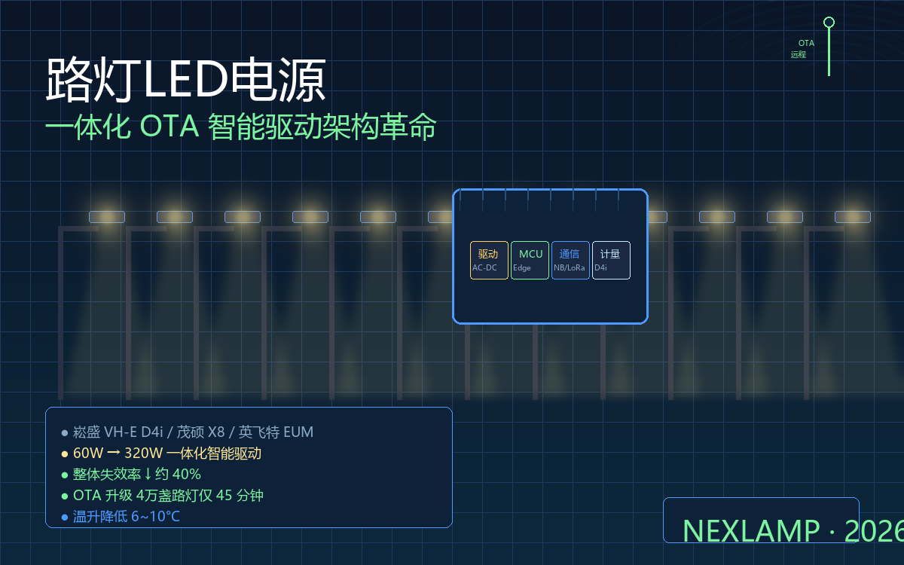

如果你最近翻开崧盛、茂硕、英飞特的产品手册，会发现一件很"不对劲"的事——他们卖的不是LED电源了。60W到320W的输出范围里，塞着NB-IoT通讯、HPLC载波、LoRa、电力计量芯片、0-10V/DALI双调光、还有一颗边缘MCU。这不是电源的常规升级，是把整套单灯控制器（SL-Controller）塞进了驱动壳子里。
为什么2026年8月这几家头部厂商会同时推出"集成式智能驱动"？这件事跟过去十年智能路灯项目里踩过的坑有关，也跟驱动行业的定价逻辑正在被改写有关。
一、分体架构的两类痛点：硬件+运维
过去十年，国内90%以上的智能路灯项目沿用"分体式"架构：一台传统LED驱动 + 一个外挂单灯控制器。这套组合有过它的好——标准化驱动能压成本，控制器能选不同厂家组合。但部署规模从几百盏扩展到几万盏之后，痛点开始变得尖锐。
硬件层面的痛点：驱动和控制器各自有电源、各自有发热源，同一个路灯腔体里两个发热体互相加热，温升比一体化设计高8-12°C，南方夏季35°C环境温度下，控制器芯片结温容易触到95°C的设计红线。
运维层面的痛点：一根线缆、一个连接器、一次防水接头失效，整盏灯就掉线。售后工程师进现场需要带"配电排查工具+通讯诊断工具"两套设备，平均定位故障要从40分钟起步，分摊到几万盏路灯上，是每年数百万的人力成本。
更隐蔽的是BOM复杂度——采购需要管两个SKU、两套备件、两条供应链。任何一个缺货，整个项目节奏就被卡。
二、一体化架构做了四件事：合、算、存、传
所谓"一体化智能驱动"，并不是把两套产品拼在一起凑外观。它是把AC-DC变换、边缘MCU、电力计量、通讯模组、调光逻辑五件事压到一块PCB上，配单一铸铝外壳。几家头部厂商方案虽然不完全相同，但都拆得开这四项：
合——电源与控制合并，单一散热路径，温升比同功率分体方案低6-10°C； 算——边缘MCU在本地完成调光决策、场景策略、人车感应联动，云端只是配置下发和数据回收； 存——内置电力计量芯片，可直接读出功率、电压、电流、累计电量、支持D4i标准的285个数据点； 传——通讯模组可选LoRa、NB-IoT、HPLC、PLC四种，按区域基础设施条件配置，一台设备铺到项目就行。
茂硕X8/X6E-G的实测数据显示，这种集成方案能让整体失效率下降约40%。这不是因为元器件变好了，而是把分体架构里最容易失效的连接器和线缆干掉了。
三、OTA远程升级：让路灯变成"持续可演进"基础设施
一体化之后最让运维团队兴奋的功能是OTA——Over The Air，空中升级。
过去的固件更新是这样的：开着登高车，一盏一盏开盖，用专用编程器重刷控制器芯片。一条街200盏灯改一次策略要跑两周。升级失败概率2-3%，有一次失败整盏灯就被刷黑。
OTA把这件事简化到一次云端点击。授权管理人员从云平台推送新固件，几十秒刷完整个片区的路灯，失败可以自动回滚。这一动作的本质是让路灯从"一次性硬件"变成了"可迭代基础设施"，这跟十几年前的手机行业经历过的故事非常相似。
实测一个杭州的智慧路灯项目——4万盏规模，OTA推送一次新调光策略耗时45分钟，14盏失败自动重试一次成功。这在过去需要12个人、两周时间。
四、三道关卡：从"卖电源"到"卖边缘节点"
但这件事给传统驱动厂商带来一个难题：以前卖一台60W电源报价￥80、毛利10%，现在卖"60W智能驱动"报价￥280——终端用户愿意付这笔钱吗？
第一道关是认证：智能一体化电源CCC/CQC/EMC认证的测试项目比传统电源多一倍，研发周期8-12个月，对小厂不友好。
第二道关是云端：OTA、远程运维、数据上报都意味着工厂必须搭一个跟路灯同寿命的云平台（10-15年），这一年的云成本可能吃掉整个产品5-7%的毛利。
第三道关是人才：驱动硬件工程师懂EMC、懂安规，但面对的是MCU+Linux嵌入式开发，需要另一套团队。崧盛把硬件研发和软件研发的人员比例从2019年的7:3改成了2026年的4:6。
这三关挡住了大多数中小驱动厂，留下来的一定是有完整软硬件团队的头部企业。深圳南山的某家头部厂商告诉我，他们已经把"LED驱动事业部"改名成"智慧基础设施事业部"——产品定义正在改写。
五、写给做智能路灯项目的采购方
如果你正在评估智能路灯方案，对一体化架构只需要盯三个指标：
- OTA是否支持版本回滚——不能回滚的OTA不是真OTA；
- 电力计量精度是否到达0.5%——这是D4i标准的核心，越过0.5%门槛的方案才能做精准的能耗分摊；
- 通讯是否同时支持LoRa和NB-IoT——只支持一种意味着锁死单一运营商网络，迁移成本极高。
一体化OTA智能驱动不是噱头，是LED驱动电源行业十年一遇的产品形态重构。理解这个转变的工程和商业含义，比单纯比较报价重要得多。